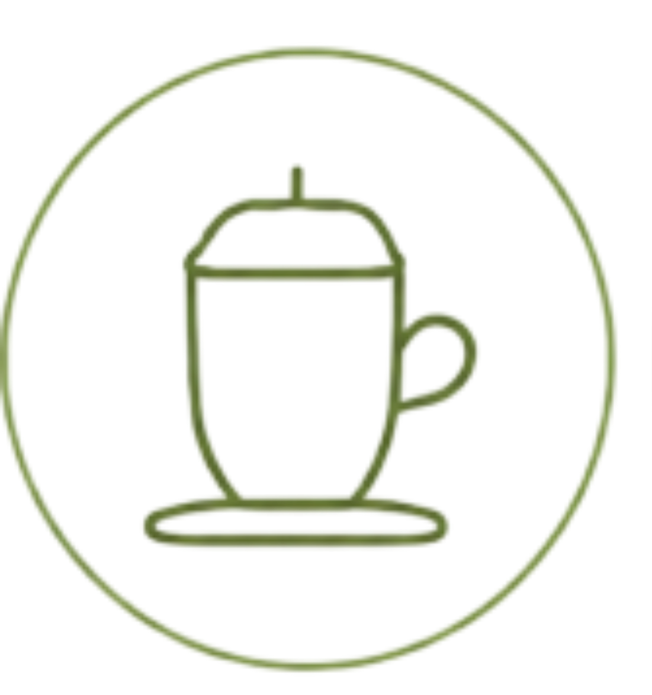

Tænkepause
0:10
Tag 10 sekunder til at tænke over dit køb
Med Dankort Øremærket vælger du at sætte et positivt aftryk hver gang du betaler.
Læs mere om øremærket
0:10
Tag 10 sekunder til at tænke over dit køb
Du har øremærket
til Naturfonden
Mål: 500 kr.

I dag, 10:23
Naturfonden
Dankort Øremærket er et samarbejde med Naturfonden. Sammen skaber vi en grønnere fremtid.


Dine betalinger er altid beskyttede.

Se præcis, hvordan dit bidrag gør en forskel.

Vi støtter projekter, der beskytter naturen.

Små handlinger skaber store forandringer.